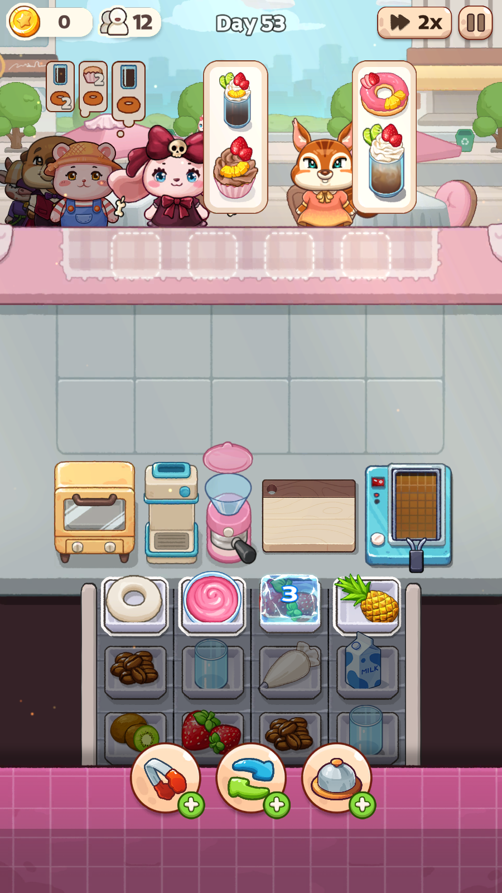
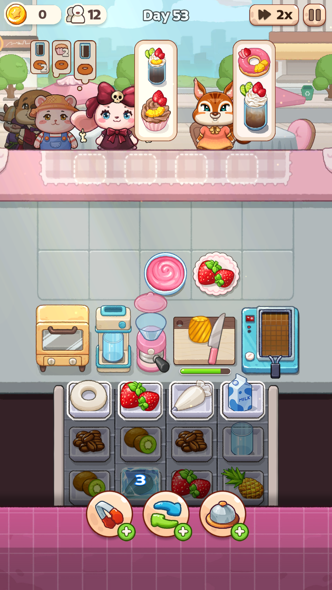
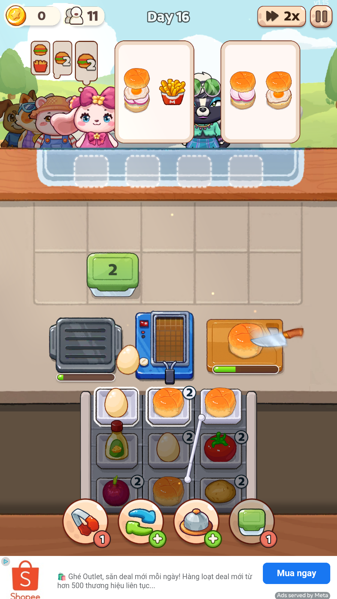

Ô đóng băng (Frozen Item, token #1:n)
Mô tả
- Món nằm trong khối băng có số: không chạm lấy được cho tới khi băng tan. Băng tan bằng cách lấy các món ở cột kề bên: mỗi lần lấy làm băng ở cột bên cạnh giảm 1.
- Rã băng chỉ tính cho ô đầu (hàng 0) của cột kề; lấy món cách 2 cột không có tác dụng (Playtest bản 1.11).
- 323/1 030 level APK (340/1 090 server live 16/11), 1799 ô băng với số lượt 1 (820), 2 (896) hoặc 3 (83); không số thì mặc định 3.
- Burger: level 34 là level đầu; map khác sớm hơn (seafood L2, pizza L3, coffee L23). Popup "Frozen Item" hiện ở đầu level đầu tiên.
Thiết kế chi tiết
Tóm tắt thiết kế
- Code Rã băng bằng việc lấy món cột kề (
CollectThawColumns+TryThawOneTurn): cơ chế biến món đang kẹt thành "phần thưởng gián tiếp" cho nước đi ở cạnh nó. - Code Khác 1.11: rã theo tập cột, một cột chỉ rã 1 lượt mỗi lần chạm dù batch có nhiều ô kề (1.11 rã từng ô,
ThawFrontAtđã bị xoá). - APK 323/1 030 level (31%); 1799 ô băng, đa số 1–2 lượt (chỉ 83 ô 3 lượt).
- Live 16/11 Server live: 340/1 090 level; bento tăng từ 8 lên 28, pizza giảm từ 43 xuống 21.
- Playtest Bản 1.11 (coffee L23): kề liên tiếp 3→2→1→0 rồi lấy được; lấy cách 2 cột không rã; chạm trực tiếp bị từ chối.
- Nhận định Số lượt thấp (1–2) khiến băng giống "cổng nhỏ" hơn là khoá; cơ chế dễ gây kẹt nên cần
ConveyorLockoutCheckđể báo trước.
Luồng người chơi từng bước
- Học cơ chếGiao diện CodePopup "Frozen Item – Frozen ingredients can't be picked. Pick up a nearby item to break the ice." / "Got it!".
- Thấy ô băngNgười chơi PlaytestÔ bọc băng số 3 ở hàng đầu; chạm trực tiếp thì rung.

Coffee L23 (Day 53): ô trái cây bọc băng số 3 ở cột 3; các ô khác bình thường (bản 1.11, 26/10) - Lấy ô kềNgười chơi CodeMỗi lần lấy ô ở cột cạnh, ô băng giảm 1 và nhảy nhẹ.
- Băng tanHệ thống PlaytestVề 0 thì món lộ ra và chạm lấy được.

Cùng level sau khi lấy các ô kề: băng đã tan, ô dâu lộ ra và lấy được (bản 1.11, 26/10)


Số level dùng ô băng theo map
| Map | APK: số level (level đầu) | Server live 16/11: số level (level đầu) |
|---|---|---|
| burger | 30 (L34) | 30 (L34) |
| coffee | 24 (L23) | 24 (L23) |
| sushi | 15 (L8) | 15 (L8) |
| pasta | 33 (L17) | 37 (L17) |
| icecream | 37 (L4) | 36 (L4) |
| sandwich | 41 (L4) | 41 (L4) |
| tteokbokki | 27 (L5) | 27 (L5) |
| seafood | 50 (L2) | 50 (L2) |
| dimsum | 15 (L4) | 12 (L4) |
| pizza | 43 (L3) | 21 (L3) |
| bento | 8 (L8) | 28 (L8) |
| croissant | - | 14 (L2) |
| tacos | - | 5 (L7) |
| Tổng | 323 / 1 030 level chơi được | 340 / 1 090 level chơi được |
Nguồn: Data/levels/_stats.json (APK), Docs/LEVEL_DATA.md (server).
Mã hoá trong chuỗi level
| Thành phần | Cú pháp | Ghi chú |
|---|---|---|
| Ô hàng đợi băng | id[:amount]#1:n | n lượt; n < 1 → 3 |
| Ví dụ burger L34 | 16:2#1:2 | ô id 16 (cheese-sauce), amount 2, băng 2 lượt |
| Thứ tự effect | #effect lặp lại | có thể kèm #2 (Hidden) hoặc #3:c (Key) |
Cú pháp theo Tools/data/fp_level_syntax.py.
Vận dụng cho game khác
- Cho người chơi cách mở khoá gián tiếp bằng chính hành động chính (lấy món kề) thay vì nút phụ.
- Dùng số nhỏ (1–3) và hoạt hình rã băng để mỗi nước đi có phản hồi rõ.
Bảng tổng hợp mọi tính năng đã làm chi tiết: FoodiePop_ThietKeChiTiet.xlsx.
Mở khóa & điểm vào
Bật khi hàng đợi có #1:n (n lượt, n < 1 → 3 theo StackModeService.DefaultFreezeTurns). Popup intro một lần (PlayerPrefs IntroSlotMechanic_Freeze). Khoá New Feature là Slot-Freeze (tên enum Freeze).
Điểm vào:
- Đầu level đầu tiên có ô băng: popup
UIPopup-IntroMechanic-Slot-Frozen("Frozen Item" / "Got it!") - Màn thắng liền trước: thanh "New Feature" và popup (khoá
Slot-Freeze) - Băng chuyền nguyên liệu: ô bọc băng với số lượt còn lại
Cách hoạt động
- Chuỗi hàng đợi có ô
#1:n:StackModeService.BuildCellsFromQueueđọcTryGetStatus(Freeze)và gánStatusParam(n, mặc định 3) cho bundle;ConveyorFreeze.ApplyFreeze(item, turns)gán_cooldown= số lượt (turns < 1 thì lấyfreezeTurns= 3 của spawner). - Ô băng vẽ lớp băng có số;
_cooldown > 0nghĩa làIsFrozen.ConveyorPickup.Allows/TryTaptừ chối chạm: item rung (PlayRejectBump). - Người chơi lấy một ô ở cột c (bề rộng w).
IngredientSpawnerController.OnItemPickedxoá tập_thawColumns, rồi với mỗi món trong batch gọiCollectThawColumns. CollectThawColumnsthêm cột c-1 nếuConveyorGrid.AreAdjacent(c-1, c)và cột c+w nếuAreAdjacent(c+w, c+w-1); hai cột "kề" khi khoảng cách tâm < 1,5 bước cột (ColumnStep).- Với mỗi cột trong tập, lấy ô đầu (
ConveyorGrid.FrontSlotAt) và gọiIngredientConveyorItem.TryThawOneTurn: nếu_cooldown > 0thì giảm 1 (TickFreeze) và nhảy nhẹ (PlayThawHop). - Cooldown về 0: ô chạm lấy được. Tongs (chọn bất kỳ) vẫn không chọn được ô băng và lấy bằng Tongs không rã băng ai (OnItemPicked thoát ngay khi
PickAnyMode). - Nếu mọi ô băng không còn nước rã nào,
ConveyorLockoutCheck+ConveyorStuckAlertbáo kẹt và nháy các ô bị khoá.
Ảnh chụp
Bấm ảnh để phóng to, dùng phím ← → để chuyển ảnh. Nhãn màu cho biết nguồn bằng chứng của ảnh.


Số liệu chính
| Chỉ số | Giá trị | Nguồn |
|---|---|---|
| Level dùng ô băng (APK) | 323 / 1 030 | Data/levels/_stats.json (queue.Freeze) |
| Level dùng ô băng (server live 16/11) | 340 / 1 090 | Docs/LEVEL_DATA.md |
| Tổng ô băng (APK) | 1799 | Data/levels/* |
| Số lượt rã phổ biến | 2 (896 ô), 1 (820 ô), 3 (83 ô) | Data/levels/* |
| Số lượt mặc định | 3 | StackModeService.DefaultFreezeTurns |
Use case (11)
Bấm vào từng use case để mở. Mở/đóng tất cả
UC-01 Ô băng xuất hiện
Các bước- Parse
#1:n - Bundle
Status = Freeze,StatusParam = n - Vẽ băng và số
| Actor | System |
|---|---|
| Trigger | Level tải xong |
| Điều kiện | Level có #1:n |
| Kết quả | Món bị bọc băng, hiện số lượt |
| Quy tắc / số liệu | n = 1: 820 ô; n = 2: 896; n = 3: 83 (APK); mỗi level có băng trung bình 5.6 ô |
| Evidence | StackModeService.BuildCellsFromQueue |
UC-02 Chạm trực tiếp ô băng
Các bướcConveyorPickup.Allowstừ chối (cooldown ≥ 1)PlayRejectBump
| Actor | Player |
|---|---|
| Trigger | Chạm ô đang đóng băng ở hàng 0 |
| Điều kiện | Ô có cooldown > 0 |
| Kết quả | Ô rung, không lấy |
| Quy tắc / số liệu | Không trừ gì |
| Evidence | ConveyorPickup.TryTap |
UC-03 Lấy món kề bên làm băng rã
Các bướcOnItemPicked→CollectThawColumnsTryThawOneTurncho ô đầu cột kề
| Actor | Player |
|---|---|
| Trigger | Lấy ô ở cột c khi cột c-1 hoặc c+w có ô băng đầu cột |
| Điều kiện | Có ô băng ở cột kề |
| Kết quả | Số lượt giảm 1, ô nhảy PlayThawHop |
| Quy tắc / số liệu | Chỉ cột kề (c-1, c+w); chỉ ô đầu cột |
| Evidence | IngredientSpawnerController.CollectThawColumns |
UC-04 Lấy batch nhiều ô (chuỗi / bó)
Các bước- Mỗi ô trong batch thêm cột kề vào
_thawColumns(HashSet) - Mỗi cột chỉ rã 1 lượt dù có nhiều ô kề trong batch
| Actor | Player |
|---|---|
| Trigger | Lấy chuỗi Linked hoặc bó Combined |
| Điều kiện | Batch ≥ 2 ô |
| Kết quả | Rã tối đa 1 lượt mỗi cột / lần chạm |
| Quy tắc / số liệu | Khác bản 1.11: 1.11 rã theo từng ô (ThawFrontAt); 1.15 gom tập cột rồi rã một lần |
| Evidence | IngredientSpawnerController.OnItemPicked |
UC-05 Băng tan hẳn
Các bướcTickFreezegiảm đến 0- Lớp băng biến mất
| Actor | Player |
|---|---|
| Trigger | cooldown về 0 |
| Điều kiện | Đã rã đủ n lượt |
| Kết quả | Ô chạm lấy được |
| Quy tắc / số liệu | Playtest bản 1.11 (coffee L23): kề liên tiếp 3→2→1→0, rồi mới lấy được |
| Evidence | IngredientConveyorItem.TryThawOneTurn |
UC-06 Lấy cách 2 cột không rã
Các bướcAreAdjacenttrả false- Không thêm vào
_thawColumns
| Actor | Player |
|---|---|
| Trigger | Lấy ô ở cột không kề |
| Điều kiện | Cột không kề |
| Kết quả | Băng giữ nguyên |
| Quy tắc / số liệu | Playtest bản 1.11: lấy cách 2 cột giữ nguyên số 3 |
| Evidence | ConveyorGrid.AreAdjacent |
UC-07 Tongs với ô băng
Các bướcConveyorPickup.IsPickAnyCandidatekiểm traIsChainFrozenWhyNotPickAnytrả "frozen"
| Actor | Player |
|---|---|
| Trigger | Dùng Tongs |
| Điều kiện | Có Tongs |
| Kết quả | Không chọn được ô băng; lấy bằng Tongs không rã băng |
| Quy tắc / số liệu | Tongs thoát sớm trong OnItemPicked |
| Evidence | ConveyorPickup.WhyNotPickAny |
UC-08 Chuỗi Linked chứa ô băng
Các bướcIsChainFrozentrue- Cả chuỗi không lấy được
| Actor | Player |
|---|---|
| Trigger | Một thành viên chuỗi đóng băng |
| Điều kiện | Chuỗi có ô băng |
| Kết quả | Phải rã thành viên băng trước |
| Quy tắc / số liệu | Xem LinkedItems |
| Evidence | IngredientConveyorItem.IsChainFrozen |
UC-09 Kẹt: không còn nước rã
Các bướcConveyorLockoutCheck.Collecttìm ô bị khoáCanThawkiểm tra khả năng rãConveyorStuckAlertnháy 1 lần / giây (LockoutBlinksPerSecond)
| Actor | Player |
|---|---|
| Trigger | Mọi ô đầu cột là băng, không ô kề nào lấy được |
| Điều kiện | Mọi nước đi bị khoá |
| Kết quả | Cảnh báo kẹt / save-me |
| Quy tắc / số liệu | Verdict OutOfSlot / OutOfMove của ConveyorStuckAlert.Classify |
| Evidence | ConveyorLockoutCheck.CanThaw |
UC-10 Popup giới thiệu ở đầu level
Các bướcShowTutorialtìm_introNewObstacleConfigs(slotStatus 1)- Mở
UIPopup-IntroMechanic-Slot-Frozen Variant - "Got it!" →
SetDoneIntroNewSlotMechanics
| Actor | Player |
|---|---|
| Trigger | Level có #1 và chưa có cờ IntroSlotMechanic_Freeze |
| Điều kiện | Chưa có cờ |
| Kết quả | Cờ = 1 |
| Quy tắc / số liệu | Popup demo hai ô số 2 |
| Evidence | UIInLevelCakeOrder.SetDoneIntroNewSlotMechanics |
UC-11 Đóng băng ngẫu nhiên khi sinh hàng đợi
Các bướcConveyorFreeze.TryFreezeOnSpawn(item)theoFreezeChance
| Actor | Player |
|---|---|
| Trigger | Hàng đợi do ConveyorBundleBuilder sinh (không phải level thiết kế) |
| Điều kiện | Hàng đợi ngẫu nhiên |
| Kết quả | Không dùng trong 1.15: freezeChance = 0 ở cả 11 scene map |
| Quy tắc / số liệu | Cấu hình sẵn: freezeTurns = 3 |
| Evidence | ConveyorFreeze.TryFreezeOnSpawn |
Cấu hình (10)
Gộp mọi nguồn: const trong code, giá trị mặc định trong APK, storage key, AB test, cờ server.
| Nguồn | Key | Kiểu | Giá trị | Ý nghĩa | Nơi định nghĩa |
|---|---|---|---|---|---|
| level string | queue token #1:n | effect | Freeze: n lượt rã (n < 1 → 3) | ô băng | IngredientQueueTranslator.ParseEffectToken, IngredientSlotStatus Freeze = 1 |
| code const | StackModeService.DefaultFreezeTurns | int | 3 | số lượt mặc định | AnhPD.FoodOrder.StackModeService |
| asset | freezeChance / freezeTurns (scene) | float / int | 0 / 3 ở cả 11 map | đóng băng ngẫu nhiên khi sinh hàng đợi; chance = 0 nên không chạy | FS*.unity (IngredientSpawnerController) |
| code | ConveyorGrid.AreAdjacent ngưỡng | float | |Δx| < 1,5 × ColumnStep | hai cột kề nhau | AnhPD.FoodOrder.ConveyorGrid |
| code const | LockoutBlinksPerSecond | float | 1 | tốc độ nháy ô kẹt | AnhPD.FoodOrder.ConveyorStuckAlert |
| code const | CheckInterval (ConveyorStuckAlert) | float | 0,4 s | chu kỳ kiểm tra kẹt | AnhPD.FoodOrder.ConveyorStuckAlert |
| Data/levels | Phân bố n (APK) | int | n=1: 820, n=2: 896, n=3: 83 (tổng 1799 ô) | dữ liệu 1 030 level chơi được | Data/levels/* |
| storage key | PlayerPrefs IntroSlotMechanic_Freeze | int | 1 = đã xem | cờ intro | UIInLevelCakeOrder.GetKeyIsDoneIntroNewSlotMechanics |
| asset | UINewFeartherConfig["Slot-Freeze"] | NewFeatherConfig | featherName "Frozen Item"; featherDesc "Frozen ingredients can't be picked. Pick up a nearby item to break the ice."; key frozen_item | nội dung popup New Feature | UINewFeatureConfigObstacle.asset |
| asset (UI_InGame en-GB) | Intro popup text | string | "Frozen Item" / "Frozen ingredients can't be picked. Pick up a nearby item to break the ice." / "Got it!" | popup UIPopup-IntroMechanic-Slot-Frozen Variant | Map-common_assets/Prefabs/UI/InGame |
Backend / server
| Command | Chiều | Mục đích |
|---|---|---|
Remote Config map_config_<map>_lv_<n> / map_config_<map>_lv_all_override_default | server→client | Chuỗi level (khách ~ lưới ~ hàng đợi) mang token của cơ chế này; server live 16/11 ghi đè 1 090 level (xem Docs/LEVEL_DATA.md). Không có API riêng cho cơ chế. |
Giao diện (UI)
| Element | Class | Mục đích |
|---|---|---|
| Ô bọc băng có số | AnhPD.FoodOrder.IngredientConveyorItem | vẽ băng, số lượt, rung khi chạm, nhảy khi rã |
| Nháy ô kẹt | AnhPD.FoodOrder.ConveyorStuckAlert | tô sáng ô bị khoá khi không còn nước đi |
| Popup giới thiệu | CakeOrder.InGame.UIPopupIntroNewMechanics | prefab Slot-Frozen |
Storage keys
IntroSlotMechanic_Freeze
Còn thiếu / chưa xác minh
- Playtest 16/11 (Day 13–20) không gặp ô băng; ảnh và số đo rã băng là bản 1.11. Trên 1.15 chỉ đọc code (rã theo tập cột kề, một lần mỗi cột).
- Quầy phục vụ có lớp kính xanh nhạt (Day 13, 16, 19) KHÔNG phải ô đóng băng: ảnh Day 13 trước khi dùng Stack Box cũng có lớp này, nên đó là giao diện quầy mặc định (Playtest).
- Weather "Freeze" của level (
WeatherEffect) là kiểu thời tiết, không liên quan trực tiếp tới ô băng; chưa xác minh có tác động tới độ kiên nhẫn khách. - Không thấy event analytics riêng cho cơ chế này.
Tính năng liên quan
Băng chuyền nguyên liệu (ConveyorGrid) Món liên kết (Linked Items, nhóm `$` thứ hai) Ô ẩn (Hidden Item, token #2) Khối băng theo đơn (Ice Block, Grid-OrderLock) Booster trong màn Giới thiệu tính năng mới (New Feature x/N) Định dạng level, độ khó & thống kê
Nguồn đã đọc
_analysis/code/decompiled/Assembly-CSharp/AnhPD.FoodOrder.IngredientSpawnerController.c (OnItemPicked, CollectThawColumns)_analysis/code/decompiled/Assembly-CSharp/AnhPD.FoodOrder.IngredientConveyorItem.c (TryThawOneTurn)_analysis/code/decompiled/Assembly-CSharp/AnhPD.FoodOrder.ConveyorGrid.c (AreAdjacent)_analysis/code/decompiled/Assembly-CSharp/AnhPD.FoodOrder.ConveyorPickup.c (IsPickAnyCandidate, WhyNotPickAny)_analysis/code/stubs/Assembly-CSharp/AnhPD.FoodOrder.StackModeService.cs_analysis/code/stubs/Assembly-CSharp/AnhPD.FoodOrder.ConveyorLockoutCheck.csData/config/UINewFeartherConfig.jsonDocs/DIFF_111_115.md (ThawFrontAt bị bỏ, CollectThawColumns mới)Docs/LEVEL_DATA.mdData/levels/*F:/0_Phuc/Clone/Pop/Docs/decode/GAMEPLAY.md (H09, H22, gợi ý 1.11)